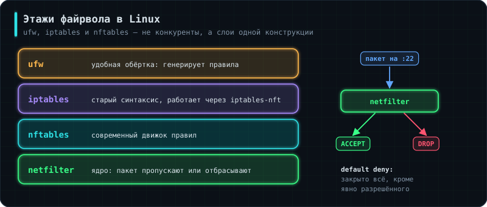

Аналогия: охранник на входе с двумя стилями работы. Один по умолчанию
никого не пускает, кроме явно разрешённых — так безопаснее. Другой
пускает всех, кроме явно запрещённых — проще, но рискованнее.
Первое, что нужно разложить по полкам: iptables, nftables и ufw — не конкуренты, а разные этажи одной конструкции.
- netfilter — подсистема ядра, где пакет реально пропускается или отбрасывается.
- nftables — современный движок правил поверх неё. Начиная с Ubuntu 20.04 и Debian 10 это вариант по умолчанию.
- iptables — старый инструмент, официально переведённый в режим legacy-поддержки. Команды по-прежнему работают, но через слой совместимости транслируются в nftables.
- ufw — не файрвол вообще, а удобная обёртка, которая генерирует правила за тебя.
Отсюда практическая рекомендация: знать нужно iptables (его синтаксис во всех старых инструкциях, статьях и чужих скриптах, которые тебе достанутся по наследству), а настраивать свой сервер — через ufw.
sudo ufw default deny incoming # запрет по умолчанию — единственно верная база
sudo ufw default allow outgoing
sudo ufw allow 22/tcp # ОБЯЗАТЕЛЬНО до включения, иначе отрежешь себе SSH
sudo ufw allow 80,443/tcp
sudo ufw allow from 10.0.0.0/24 to any port 5432 # доступ к базе только из своей подсети
sudo ufw enable
sudo ufw status numbered # список правил с номерами
sudo ufw delete 3 # удалить правило по номеру
Классический синтаксис iptables, который надо уметь прочитать:
iptables -L -n -v # посмотреть текущие правила
iptables -A INPUT -p tcp --dport 22 -j ACCEPT # разрешить SSH
iptables -A INPUT -p icmp --icmp-type echo-request -j DROP # не отвечать на ping
Разбор правила iptables -A INPUT -p tcp --dport 22 -j ACCEPT: -A INPUT (append) — добавить в конец цепочки INPUT, -p tcp — фильтр по протоколу, --dport 22 — по порту назначения, -j ACCEPT (jump) — что делать с подошедшим трафиком.
Правила организованы в цепочки: INPUT — входящий к этой машине, OUTPUT — исходящий, FORWARD — транзитный (для роутеров). Цели: ACCEPT — пропустить, DROP — молча отбросить, REJECT — отбросить с уведомлением отправителя. Правила читаются по порядку, срабатывает первое подходящее — поэтому разрешающее правило после запрещающего бесполезно.
Современный эквивалент на nftables:
sudo nft list ruleset # всё, что есть сейчас
sudo nft add rule inet filter input tcp dport 22 accept # разрешить SSH
🛑Как отрезать себе доступ к серверу
Самая частая авария при работе с firewall: включил запрет по умолчанию, забыв разрешить порт 22 — и связь обрывается вместе с твоей SSH-сессией. Чинить придётся через консоль провайдера, а на железном сервере — ногами.
Три страховки: сначала разреши SSH, потом включай; не закрывай текущую сессию, пока не проверил вход из второго окна; на удалённой машине поставь sudo shutdown -r +10 перед экспериментом — если отрежешься, через 10 минут сервер перезагрузится с прежними правилами (ufw без enable их не сохранит), а если всё хорошо, отменишь через shutdown -c.
nmap -sn <IP> # даже если ping не проходит, nmap может показать "Host is up"